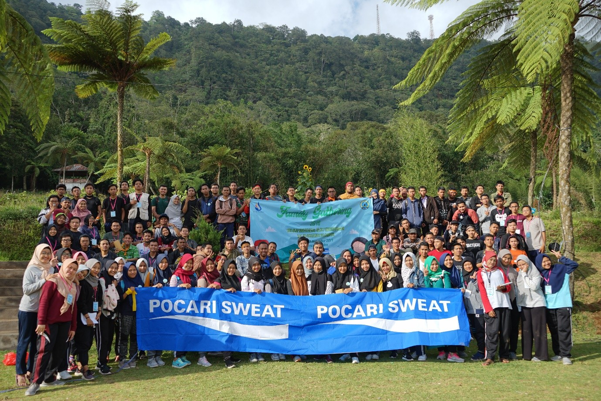
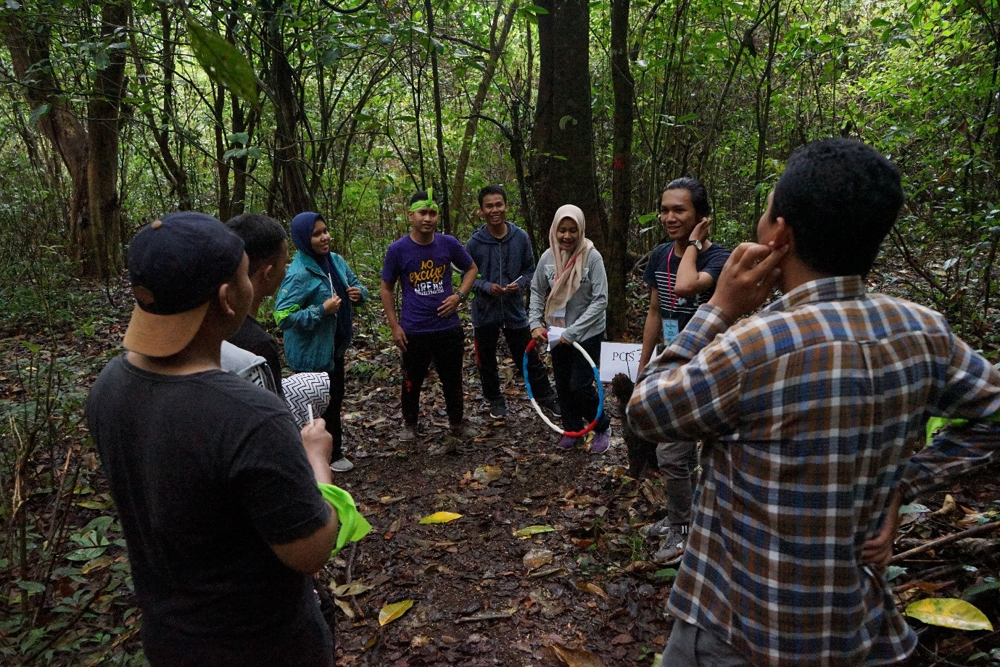
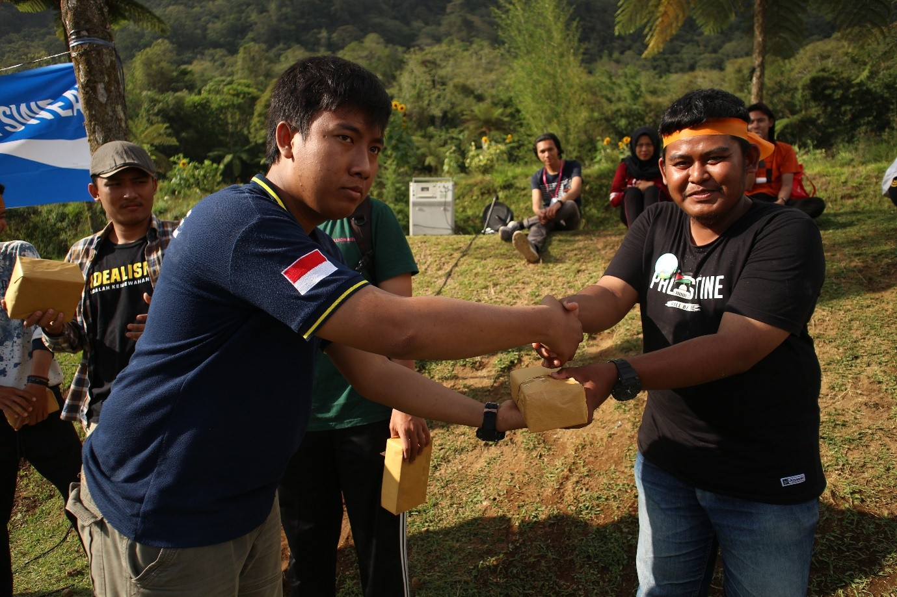

Denpasar-Pada 03 November 2019 UKM MCOS (Moslem Community of STIKOM Bali) kembali menyelenggarakan kegiatan tahunan yaitu family gathering (Famgath). Tahun 2019 ini Famgath dilaksanakan di Soewan Garden, Bedugul dengan mengangkat tema “Melalui Kreatifitas, Rajut Kebersamaan Dalam Ukhuwah Islamiyah”. Peserta berkumpul di kampus pukul 06.30 Wita, diawali dengan sambutan dan arahan dari Ketua Panitia Vidyan Habibi, ketua umum MCOS Achmad Taufik Hidayatullah dan juga sambutan dari perwakilan kemahasiswaan bapak Edwar Ridwan,S.Ag.,M.Kom.

Pada pukul 07.40 peserta berangkat menuju Soewan Garden dari ITB Stikom Bali, dan peserta tiba di lokasi pukul 09.40 Wita dan langsung menuju ke camping ground. Setelah itu peserta berbaris sesuai dengan kelompok yang telah ditentukan oleh panitia dan masing-masing dari mereka membuat yel-yel.Setelah membuat yel-yel mereka pun bersiap melakukan kegiatan selanjutnya yaitu pencarian jejak (tracking). Dalam tracking ini peserta diuji kecerdasan, kekompakan, dan solidaritas sesama tim di hutan Soewan Garden.

Pukul 12.10 Wita kelompok pertama tiba di lokasi camping ground dan panitia langsung mengarahkan peserta untuk sholat dzuhur. Setelah istirahat dan makan siang peserta kembali menuju ke camping ground untuk mengikuti kegiatan selanjutnya yaitu lomba-lomba. Lomba yang dilaksanakan yaitu estafet tepung,estafet bola,dan tarik tambang.Dalam lomba tersebut panitia dan BPH (Badan Pengurus Harian) MCOS ikut pula memeriahkan acara tersebut.

Pada akhir acara peserta yang berprestasi diberikan hadiah dan dilakukan sesi foto bersama seluruh peserta dan panitia family gathering MCOS 2019. Penghargaan yang diberikan meliputi, juara umum dan kelompok terfavorit.
Contact Us Email : info@stikom-bali.ac.id Phone : (0361)244445 Copyright by Dian Elvira Aryani ITB STIKOM BALI